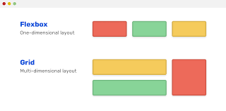
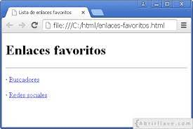

El propósito de este sitio es fomentar y mejorar
el Aprendizaje de los Flex Box, Listas y Enlaces.
Flex Box

El Módulo de Caja Flexible, comúnmente llamado flexbox, fue diseñado como un modelo unidimensional de layout, y como un método que pueda ayudar a distribuir el espacio entre los ítems de una interfaz y mejorar las capacidades de alineación.
Cuando describimos a flexbox como unidimensional destacamos el hecho que flexbox maneja el layout en una sola dimensión a la vez — ya sea como fila o como columna. Esto contrasta con el modelo bidimensional del Grid Layout de CSS, el cual controla columnas y filas a la vez
MDN Web Docs. Tecnología para desarrolladores web. CSS. Diseño de caja flexible CSS. Conceptos Básicos de flexbox". Recuperado de
https://developer.mozilla.org/es/docs/Web/CSS/CSS_Flexible_Box_Layout/Basic_Concepts_of_Flexbox
Listas y Enlaces

Listas ordenadas
Ordenan la lista anteponiendo números, letras o signos.
Comienzan con la etiqueta "ol"
Para cada uno de los elementos se utiliza la etiqueta "li"
Ejemplo:
Ciencias más importantes:
- Física
- Química
- Biología
Listas Desordenadas
Muestran la lista anteponiendo un punto, cuadrado o triángulo a cada elemento
Comienzan con la etiqueta "ul" (la "dir" no es recomendada)
Para cada uno de los elementos de la misma se emplea la etiqueta "li"
Ejemplo:
Pseudomedicinas que son una estafa:
- Homeopatía
- Flores de Bach
- Quiropráctica
Enlaces en HTML (links).
Los enlaces permiten la conexión con:
Una imagen
Un vídeo
Un archivo de sonido
Sitios en la web (u otra página web)
Acceso a un programa de e-mail
Universidad de Murcia. Desarrollo de Aplicaciones Web.
Enlaces, Listas y Tablas en HTML. Recuperado de.
https://www.um.es/docencia/barzana/DAWEB/2017-18/daweb-tema-4-enlaces-en-html.html